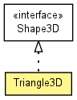

toxi.geom
Class Triangle3D
java.lang.Object
 toxi.geom.Triangle3D
toxi.geom.Triangle3D
- All Implemented Interfaces:
- Shape3D
public class Triangle3D
- extends java.lang.Object
- implements Shape3D

|
Method Summary |
Vec3D |
closestPointOnSurface(Vec3D p)
Computes the the point closest to the current vector on the surface of
triangle abc. |
Vec3D |
computeCentroid()
|
Vec3D |
computeNormal()
|
boolean |
containsPoint(ReadonlyVec3D p)
Checks if point vector is inside the triangle created by the points a, b
and c. |
static Triangle3D |
createEquilateralFrom(Vec3D a,
Vec3D b)
|
Triangle3D |
flipVertexOrder()
|
Vec3D |
fromBarycentric(ReadonlyVec3D p)
|
AABB |
getBoundingBox()
|
Vec3D |
getClosestPointTo(ReadonlyVec3D p)
Finds and returns the closest point on any of the triangle edges to the
point given. |
boolean |
isClockwiseInXY()
|
static boolean |
isClockwiseInXY(Vec3D a,
Vec3D b,
Vec3D c)
|
boolean |
isClockwiseInXZ()
|
static boolean |
isClockwiseInXZ(Vec3D a,
Vec3D b,
Vec3D c)
|
boolean |
isClockwiseInYZ()
|
static boolean |
isClockwiseInYZ(Vec3D a,
Vec3D b,
Vec3D c)
|
void |
set(Vec3D a2,
Vec3D b2,
Vec3D c2)
|
Vec3D |
toBarycentric(ReadonlyVec3D p)
|
java.lang.String |
toString()
|
| Methods inherited from class java.lang.Object |
equals, getClass, hashCode, notify, notifyAll, wait, wait, wait |
a
public Vec3D a
b
public Vec3D b
c
public Vec3D c
normal
public Vec3D normal
centroid
public Vec3D centroid
Triangle3D
public Triangle3D()
Triangle3D
public Triangle3D(Vec3D a,
Vec3D b,
Vec3D c)
createEquilateralFrom
public static Triangle3D createEquilateralFrom(Vec3D a,
Vec3D b)
isClockwiseInXY
public static boolean isClockwiseInXY(Vec3D a,
Vec3D b,
Vec3D c)
isClockwiseInXZ
public static boolean isClockwiseInXZ(Vec3D a,
Vec3D b,
Vec3D c)
isClockwiseInYZ
public static boolean isClockwiseInYZ(Vec3D a,
Vec3D b,
Vec3D c)
closestPointOnSurface
public Vec3D closestPointOnSurface(Vec3D p)
- Computes the the point closest to the current vector on the surface of
triangle abc.
From Real-Time Collision Detection by Christer Ericson, published by
Morgan Kaufmann Publishers, Copyright 2005 Elsevier Inc
- Returns:
- closest point on triangle (result may also be one of a, b or c)
computeCentroid
public Vec3D computeCentroid()
computeNormal
public Vec3D computeNormal()
containsPoint
public boolean containsPoint(ReadonlyVec3D p)
- Checks if point vector is inside the triangle created by the points a, b
and c. These points will create a plane and the point checked will have
to be on this plane in the region between a,b,c.
Note: The triangle must be defined in clockwise order a,b,c
- Specified by:
containsPoint in interface Shape3D
- Returns:
- true, if point is in triangle.
flipVertexOrder
public Triangle3D flipVertexOrder()
fromBarycentric
public Vec3D fromBarycentric(ReadonlyVec3D p)
getBoundingBox
public AABB getBoundingBox()
getClosestPointTo
public Vec3D getClosestPointTo(ReadonlyVec3D p)
- Finds and returns the closest point on any of the triangle edges to the
point given.
- Parameters:
p - point to check
- Returns:
- closest point
isClockwiseInXY
public boolean isClockwiseInXY()
isClockwiseInXZ
public boolean isClockwiseInXZ()
isClockwiseInYZ
public boolean isClockwiseInYZ()
set
public void set(Vec3D a2,
Vec3D b2,
Vec3D c2)
toBarycentric
public Vec3D toBarycentric(ReadonlyVec3D p)
toString
public java.lang.String toString()
- Overrides:
toString in class java.lang.Object